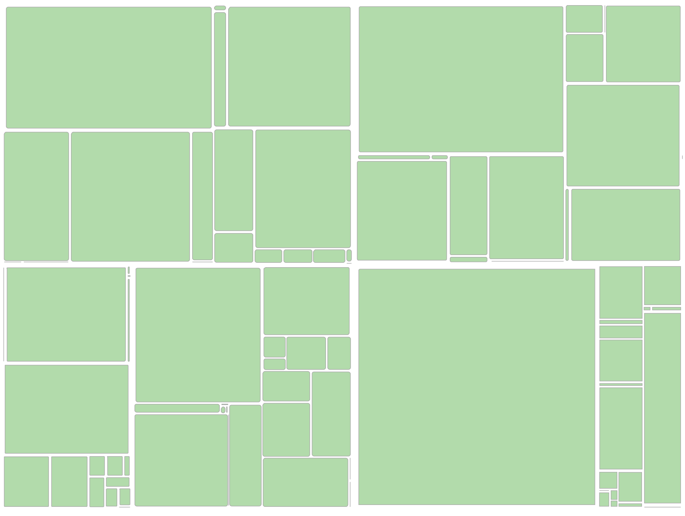
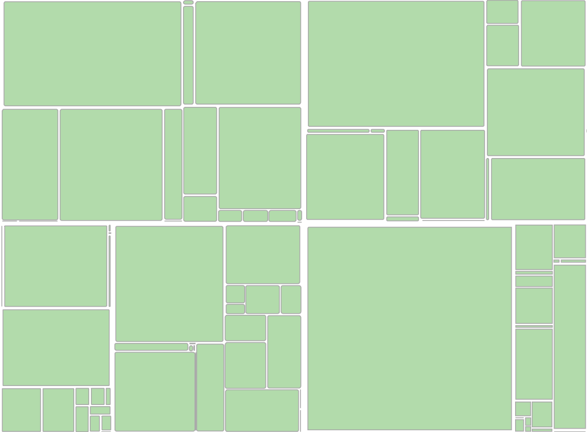
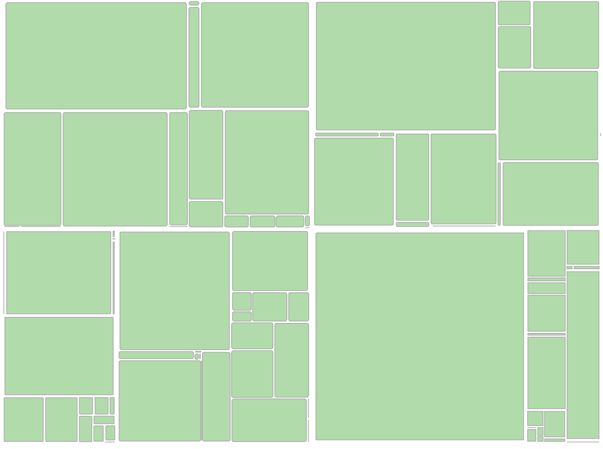
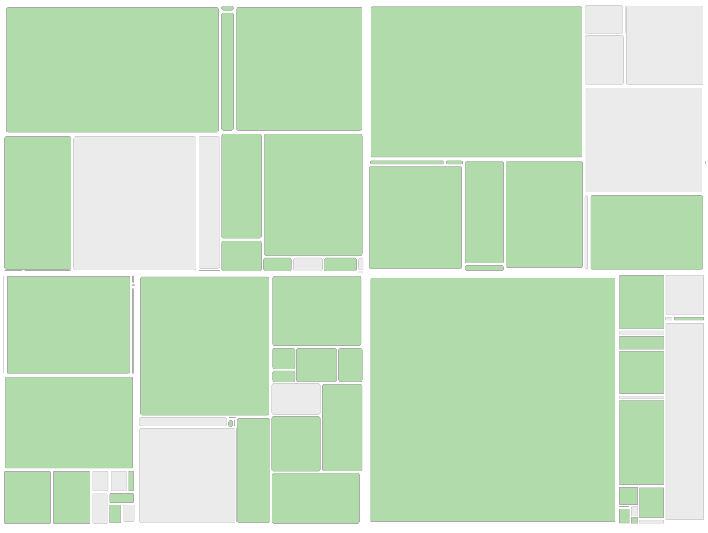
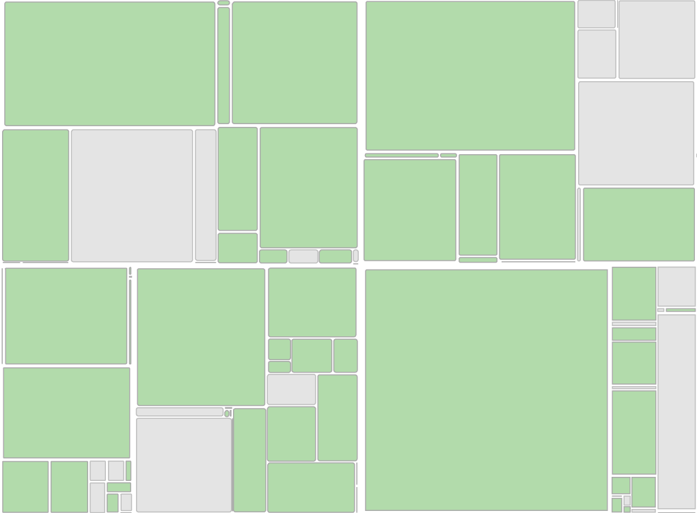
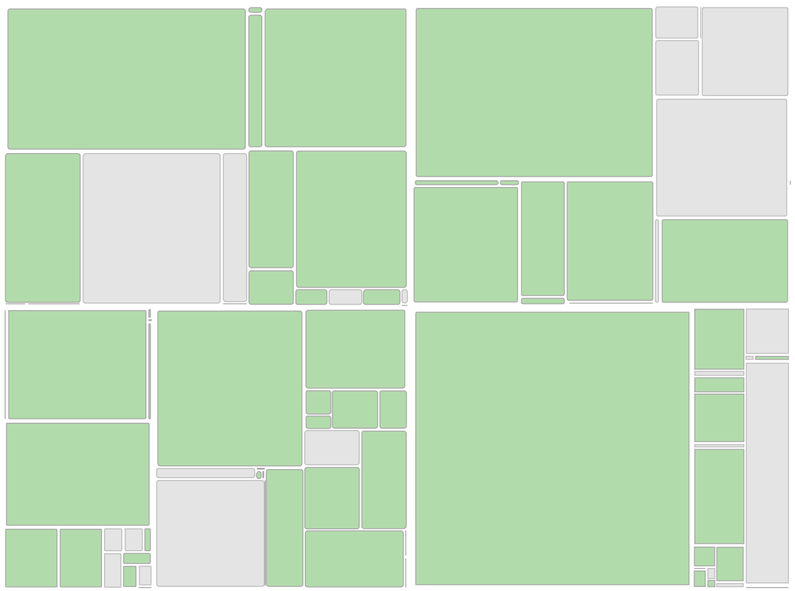

NYC touts having over 30,000 acres of land, or about 16% of New York City, for its residents to enjoy. This
includes more than 5,000 individual properties ranging from Coney Island Beach and Central Park to community
gardens, local playgrounds, and neighborhood parks. The Trust for Public Lands rates NYC as having the 10th most
effective park system in the US. The metric is based on park accessibility, acreage, amenities, and more. You can
read more about it here. But, in taking a closer look at the data, and
taking a look around me, I began to wonder how representative these numbers actually are.
It turns out, that there are lots of different types of lands that technically count as “park space,” falling
under the jurisdiction of NYC Parks. This includes parkways, undeveloped, vacant lots, and historic properties
that are typically not easily accessible to the public. With this in mind, a lot of NYC’s documented park space is
actually not accessible for normal recreational use at all, and on top of that, those that are accessible to us,
might not fit within the confines of what we think of as a “park”.
Here is a breakdown of NYC parkland according to New York State. This accounts for about 30,847 acres of land.

8,229 acres of total park space
7,664 acres of total park space
7,225 acres of total park space

8,229 acres of total park space
7,664 acres of total park space
7,225 acres of total park space

8,229 acres of total park space
7,664 acres of total park space
7,225 acres of total park space
When you take into account all of the vacant lots, managed sites, and undeveloped lands, the number of acres drops to 25,020. That means actually only 80% of NYC’s touted park space is even accessible to us for recreational use. Below shows the number of acres that are not available to us in gray.

1,807 acres of inaccessible park space
1,971 acres of inaccessible park space
883 acres of inaccessible park space

1,807 acres of inaccessible park space
1,971 acres of inaccessible park space
883 acres of inaccessible park space

1,807 acres of inaccessible park space
1,971 acres of inaccessible park space
883 acres of inaccessible park space
Great, so we New Yorkers have 25,020 acres of accessible park space right? That’s not too bad. When taking a look around on Google Maps, you’ll see green plots of land all around you signifying that there is a park—perhaps lined with trees and filled with grass—at least that is what I think of when I think "park".
Picture this: You are visiting New York City for the first time, it’s 90 degrees outside and you are in dire need of some shade. Almost instinctually, you pull out the Maps app on your phone and find the closest patch of green near you. Great, it looks like there is a park only 5 minutes away. But when you get there, you find only a cement lot with a lonely bench and no green space in sight.
This is quite a common experience for a lot of visitors, and even for me to this day. Along with those inaccessible plots of land mentioned earlier, there are lots of other types of land that show up as a park on maps—playgrounds, triangles, and strips, are represented as green spaces on the map.
I visited various green clusters in neighborhoods near me to see what was actually there:
From what seems like what should be a very green Brooklyn neighborhood, this simple experiment suggests that there is actually way less park space around us than there is documented to be.
These parks, which all show up as ubiquitous green blocks of land on the map, are vastly different from one another. From a lone bench in a treeless cement plaza to small playgrounds for kids after school, to robust neighborhood gathering places with lawns and grills, the park scene is in NYC is way more complex than what it is portrayed to be.
Perhaps some re-contextualization to what defines a park in an urban space is necessary. Or, maybe maps should just do a better job at indicating the nuances. Overall, the lesson I learned here is maybe don't always trust a map, and maybe Google a place before beginning your journey.